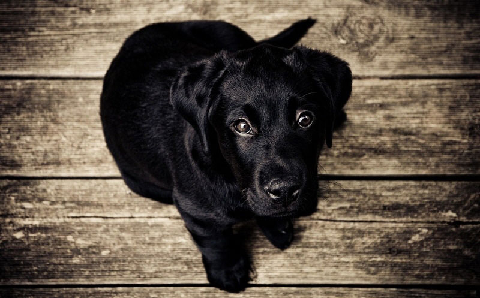

강아지가 좋아하는 마사지, 부위와 방법을 알아봐요!
근육이 뭉치거나 스트레스를 많이 받은 상황! 사람도 휴식이 필요하거나 긴장으로 가득 찬 몸을 풀어줘야 할 때가 있죠? 강아지도 쌓인 피로나 갖은 스트레스로 행복감을 채워줘야 할 때가 있습니다. 간단한 마사지로 강아지를 행복하게 만드는 방법! 강아지가 좋아하는 마사지 부위와 방법에 대해서 알아볼게요.
"강아지 마사지 어떤 점이 좋을까요?"
사람과 비슷하다고 생각하시면 될 것 같아요! 몸을 천천히 그리고 살며시 마사지하면 각종 뭉친 근육을 이완해주고, 긴장을 완화해주며, 혈액 순환 개선과 섬유 유착을 감소 시켜 줍니다. 반려인과 반려견의 유대감을 형성 시켜 주는 것은 물론 낯선 환경에서의 긴장감도 완화해줄 수 있어 극도의 긴장감, 스트레스를 느끼고 있는 강아지라면 마사지로 진정시킬 수 있습니다.
"강아지가 좋아하는 마사지 부위!"
1) 귀
양쪽 귀의 주변을 부드럽게 만져주는 것만으로도 강아지가 느끼는 긴장감을 해소해 줄 수 있습니다. 보통 강아지가 긴장하게 되면 귀를 쫑긋 세우는 것을 볼 수 있는데요. 이것은 긴장된 상태를 의미하거나 또는 상대를 경계한다는 것을 의미하기도 합니다. 이때, 귀를 부드럽게 마사지하면 긴장을 풀고 스트레스 해소에 도움이 될 수 있습니다.
2) 등
토닥토닥, 엄마들이 아기를 재울 때 많이 활용하는 방법이죠. 마찬가지로 강아지의 등을 토닥 규칙적으로 두드리거나 또는 부드럽게 쓸어준다면 흥분하거나 불안감에 떨고 있는 강아지를 안정시킬 수 있습니다. 더불어 사람과의 유대감을 쌓는 데도 도움이 되는 부위라고 합니다!
3) 앞다리, 뒷다리
강아지는 보통 뒷발을 힘차게 걷어차고 또 앞발의 추진력으로 뛰어나가게 되는데요. 그럴 때면 앞, 뒷다리에 큰 근육부터 작은 근육까지 고루 사용하게 됩니다. 근육을 사용하게 되면 당연히 신체 피로도가 높아질 수밖에 없고, 무리하게 사용할 경우 상처를 입기도 합니다. 그럴 때, 앞 뒷다리의 움푹 팬 다리 사이를 부드럽게 이완하는 마사지를 해준다면 근육의 조직을 풀어주고 부상을 방지해 주기도 합니다.
4) 몸 전체
특정 부위만 하는 것이 아닌 몸 전체를 고루 만져주는 것도 도움이 됩니다. 적절하게 부드러운 마사지를 할 경우 강아지 체형 교정에도 도움이 되고 신체 혈액 순환은 물론 근육 이완에도 도움이 되어 사람처럼 신진대사를 활발하게 만들어 준다고 합니다.
다만, 강아지가 아프거나 또는 수술을 한 지 얼마 되지 않은 상황에서는 몸에 무리가 될 수 있음으로 가급적 마사지를 피하는 것이 좋습니다. 몇 가지 유의사항에만 주의해 주신다면, 여유로운 시간대 강아지 몸을 천천히 부드럽게 만져주는 것은 강아지의 행복감을 높여주는 데 도움이 될 수 있을 것입니다!
[출처] 강아지가 좋아하는 마사지, 부위와 방법을 알아봐요! | 작성자 땡순냥이